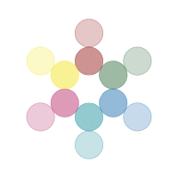

COSMIC: Computational Optimization of Spacetime through Mathematical Intelligence and Constants, proposes that information processing is the substrate of physical reality: one principle carried from the quark scale to the cosmic web.
It keeps the established results of quantum mechanics, general relativity and thermodynamics, and asks what lies beneath them, at the points where those theories stop agreeing with each other: why gravity and quantum theory will not combine, what dark energy is, what happens at a singularity, and where the observer belongs in physical law. The 21 elements below set out the argument in full. From 2026, every prediction the framework makes is published before the data that will test it, together with the result that would prove it wrong.
In 1961, Rolf Landauer at IBM proved that any logically irreversible computation must dissipate at least kT ln(2) energy per bit erased. Each piece of that equation earns its place. T is temperature: about 300 kelvin at room temperature. And ln(2), approximately 0.693, captures the information content of a single binary choice: the irreducible difference between yes and no, zero and one, heads and tails.
Beginning in 2012, researchers confirmed this directly using trapped ions, colloidal particles in laser traps, and quantum dots. The results consistently matched the kT ln(2) minimum within 2 to 5%. Physicists manipulated single bits of physical information, measured the heat dissipated, and the number matched.
Element 1 | A Quest for The Big TOE
Take anything, any object, any force, any property, and reduce it to its components. A rock reduces to molecules, molecules to atoms, atoms to subatomic particles, particles to quantum fields. At the bottom you do not find stuff. You find relationships: probabilities and interaction properties, pure information about how things behave relative to each other. Energy follows the same path. It is not a substance but a measure of capacity, a relationship between states. E=mc² is an informational relationship between mass, energy, and the speed of light. An equation, not a thing. Run this reduction on anything and the result is always the same. No exception presents itself because none is possible.
This relational structure operates simultaneously across quantum, classical, and cosmic scales. There is no level where things with independent properties suddenly appear. The same structural logic that generates the Fibonacci sequence in a sunflower generates it in a spiral galaxy arm. They are not analogous. They are the same sequence running in different substrates, which is what it means to say that reality is fundamentally relational. The Foundations below document the evidence, address the gaps, and follow the logical chain wherever it leads.
Anything that exists must bring with it everything required for its existence. A sphere is the simplest possible thing. Follow what a sphere requires, and you arrive somewhere surprising: the minimum package for any existence at all turns out to be a universe.
Introduction, A Quest for The Big TOE
COSMIC makes specific assumptions about the nature of reality. These are not philosophical preferences; they follow from what physics already tells us, applied rigorously and followed wherever the evidence leads.
Three foundational pillars that together form a unified understanding of reality. Each can be explored independently, but they ultimately reveal themselves as inseparable aspects of a single process.
The simplest possible thing is a point, but a point examined from any direction under any symmetry constraint resolves to a sphere: the inevitable geometry of something with no preferred direction, and demonstrably the optimal solution to enclosing a volume with minimal surface area. The first thing that exists arrives already optimized, not by process or selection, but by logical necessity. And the sphere that results is a mathematical fixed point, an idealization that physical reality approaches without achieving, because the asymmetry built into the first distinction prevents any process from reaching perfect completion.
One thing existing means two things exist: the thing and everything that is not it. You cannot have a boundary without two sides. Every binary in physics traces back to this original twoness. Matter and antimatter, positive and negative charge, particle and wave, system and environment are all the first distinction operating at different scales through different mechanisms. This irreducible asymmetry is also the root of uncertainty. A universe with perfect symmetry could converge to a mathematical fixed point. A universe that begins with distinction cannot. The uncertainty principle, which prevents atoms from collapsing to infinite density (and, the framework proposes, black holes as well), is the physical expression of an asymmetry that has been present since the first distinction.
The framework's answer to why matter survived antimatter: Pi is irrational. The sphere can be approached but never completed through any finite process. A universe that began in perfect symmetry between matter and antimatter should have annihilated back to nothing. On this view, the residue of matter is not a mystery. It is the remainder that irrational geometry leaves behind.
The Fibonacci sequence follows the same logic. When a third distinction forms, it can only reference what already exists, so its value is the sum of the previous two. This is not imposed on reality; it is the only arithmetically consistent way for new distinctions to emerge without importing information from nowhere. As the sequence extends, the ratio between consecutive terms converges to phi. Phi governs optimal packing in sunflower seed heads and appears in the proportions of the DNA helix. These are not coincidences. They are the geometric fingerprint of the same forced sequence operating at different scales.
Reference: Introduction, A Quest for The Big TOE.
Three independent lines of reasoning converge. Relational quantum mechanics, developed by Carlo Rovelli, addresses the measurement problem by proposing that quantum states exist only relative to observers, not as independent objective properties. Information theory shows that information quantifies relationships between states, not isolated properties. Since information is physical and requires energy to process, physical reality must operate through relational structures to support information at all.
The holographic principle: The maximum information content of any region of space is proportional not to its volume but to its boundary area. This only makes sense if reality is fundamentally relational. A relational universe packs information on surfaces, because surfaces are where relationships live.
Once you see reality as fundamentally relational, several problems that have resisted centuries of philosophical effort dissolve. The mind-body problem transforms: consciousness and matter stop being two mysterious substances that somehow interact and instead become expressions of information-processing relationships. The quantum measurement problem resolves naturally: measurements do not reveal pre-existing properties; they create relationships.
Reference: Element 1, A Quest for The Big TOE.
Landauer's bound, described above, is not a thought experiment. It has been measured: erasing a single bit costs a definite, minimum amount of heat.
Wheeler's It from Bit: John Wheeler, who coined the term "black hole," argued that information is the primary substance of physical reality: every particle, every field of force, even the spacetime continuum itself, derives its function from binary choices. Wheeler did not mean it as a metaphor. It was a claim about what the universe is made of.
Black hole thermodynamics provides independent support. The Bekenstein-Hawking entropy of a black hole is proportional to its surface area rather than its volume, representing a maximum information storage capacity set by geometry rather than material properties. This is not a property of black holes alone; it reflects something fundamental about how information relates to spacetime itself.
A 2024 synthesis integrating Landauer's results with the Margolus-Levitin, Bekenstein, and Abbe limits argued that information-energy coupling is foundational physics operating at every scale from individual bits to complex quantum fields.
Reference: Element 2, A Quest for The Big TOE.
Prime numbers are not invented. They are necessary consequences of the definition of integers. The moment integers exist, their divisibility relationships exist, and the primes exist as a subset defined by those relationships. Their energy, in an information-physical framework, exists the moment integers exist. The universe does not calculate these structures. It cannot produce anything else.
Wigner's puzzle, resolved: Eugene Wigner wrote about the unreasonable effectiveness of mathematics in the natural sciences. Abstract structures developed with no physical application in mind repeatedly describe physical reality with extraordinary precision. The puzzle dissolves in the relational framework: mathematics is the study of what constrained relationships produce. Nature is a system of constrained relationships at every scale. Of course they correspond. They are describing the same thing from different directions.
Pi does not describe a property of circles; it emerges from the relationship between a circle's circumference and its diameter. Phi appears wherever growth relationships are optimized. Euler's number e manifests wherever continuous change relationships are described. These constants do not measure things. They describe the geometry of optimal relationships, which is why they keep appearing throughout physics in domains that have no obvious connection to each other.
Element 14 documents how this shows up in quantum electrodynamics, crystalline geometry, the visual cortex across species, and the spiral structure of galaxies. Same constants, different substrates, same relational rules.
Reference: Elements 1 and 14, A Quest for The Big TOE.
The second law of thermodynamics describes the direction but does not explain why it points the way it does. Why was entropy low to begin with? The standard answer, that the universe began in an improbably low-entropy state, simply pushes the mystery back. An information-first framework reframes the question entirely.
The time gradient: If information is physical and processing it dissipates energy irreversibly, then the directional slope from low to high entropy is a consequence of information processing. If spacetime emerged from a phase transition in an information substrate, that transition was the most ordered moment in the universe's history. Everything since has been the dispersal of that initial concentration. Space and time are not two separate things that information happens to inhabit. They are two aspects of what information does as it processes and spreads.
This connects directly to consciousness. No other physical process has the specific relationship to the time gradient that nervous systems do. Evolution shaped them to exploit the one feature of the gradient that pure thermodynamics cannot: the gap between what has happened and what will happen, and the possibility of using a model of that gap to influence outcomes before they close. Anticipation requires a time gradient. Memory requires a time gradient. The subjective sense that time moves forward is not an illusion generated by a time-symmetric universe; it is an accurate report of an asymmetry built into the information-physical structure of reality.
Reference: Element 12, A Quest for The Big TOE.
Decoherence theory established that the apparent collapse of quantum superposition occurs through entanglement with the environment, not through any special act of conscious observation. Zurek's quantum Darwinism extends this: only certain quantum states, the "pointer states," are robust enough to be copied repeatedly into the environment and thus to be measurable. Measurement selects for states that survive environmental interaction.
Measurement as information exchange: Measurement is not observation by aware beings. It is any physical interaction that creates mutual information between a system and an apparatus, any relationship that encodes the system's state into another physical structure. A photon interacting with a photographic plate is measurement. The interaction creates information about the system's state, and that information, being physical, has consequences. Consciousness is not required; relationship is.
This dissolves the Wigner's Friend puzzle. If measurement is information exchange rather than conscious observation, the measurement occurs when the physical interaction occurs, not when a person becomes aware of the result. The wavefunction does not wait for a mind to attend to it. It responds to physical interactions that create information, which is what all physical interactions do.
The holographic principle adds a final piece. Information in a volume is encoded on its boundary surface. What we call collapse is better understood as the selection of the information structure that survived environmental decoherence, the record that physical interaction left behind.
Reference: Elements 1 and 15, A Quest for The Big TOE.
If consciousness processes information using only universal physics, and universal physics must inherently support information processing wherever its constituents interact, then consciousness is not an anomaly that arrived late and accidentally. It is one expression of what universal physics does, given sufficient complexity and time. Your experience of reading these words is the universe recognizing its own relational patterns through your neural information-processing networks. The whirlpool does not observe the river. The whirlpool is the river organizing itself into a temporary pattern that has the remarkable property of self-awareness.
Our view on Copenhagen: The Copenhagen interpretation assigns a privileged role to the conscious observer: without observation, reality remains in superposition. This gives consciousness cosmological weight the universe does not require. Decoherence established that physical interactions generate definite outcomes continuously and without observers. A photon absorbed by retinal tissue has already interacted and produced a definite electrochemical state before any signal reaches the brain. The relevant mechanism is physical interaction, not awareness. Any interaction collapses the wavefunction. Consciousness arrives last.
This is where the 25-million-to-one compression becomes decisive. Your visual system receives approximately one billion bits per second from your retinas and delivers somewhere between 10 and 40 bits per second to conscious awareness. Every one of those discarded bits passed through physical interactions on its way to being filtered: a photon hitting a photoreceptor, a retinal ganglion cell making a selection, the lateral geniculate nucleus applying a further filter, primary visual cortex extracting edges, higher cortical areas selecting for relevance. Each of these is a physical interaction between physical systems. Each interaction is precisely what decoherence theory identifies as the mechanism that generates definite outcomes from quantum superpositions.
Consciousness inherits a result, it does not produce one: By the time those few bits arrive at conscious awareness, the system has already passed through a compression chain involving millions of interaction steps, each a candidate for what Copenhagen would call a collapse event. The few bits that reach consciousness are the last and least causally relevant stage of a process that was generating definite physical outcomes at every prior level. The ratio is not a curiosity. It is the clearest available evidence that the universe does not hold its states open waiting for minds to attend to them.
What consciousness actually does, once removed from a cosmological role it never needed, becomes more interesting rather than less. Brains are interfaces through which universal information-processing capabilities manifest as localized awareness. Those few bits per second are not a compressed record of what just happened. They are your brain's current best model of what is most relevant for navigating what comes next: a model built by a physical system that is made entirely of the universe's own constituents, running entirely on the universe's own laws, producing an experience that is, in the most literal sense, the universe examining itself. The universe does not need consciousness to generate definite outcomes. It needs consciousness to wonder about them.
Reference: Elements 3 and 6, A Quest for The Big TOE.
At t=0, infinite density in zero volume, general relativity admits it cannot describe reality. The classical equations reach a precise result at the singularity: infinite density at a point. That result is not a failure of the equations. It is the equations finding their mathematical fixed point, the same way the isoperimetric equations find a perfect sphere. Physical processes approach the fixed point. They do not complete it. Pi encodes this directly: a sphere is defined by the ratio of its circumference to its diameter, and that ratio is irrational and transcendental. It cannot be fully expressed in any finite number of steps. Every sphere in the universe approaches the mathematical ideal without reaching it. The singularity is the same structure. The process approaches it and reflects. The bounce is not a rescue mechanism. It is what the geometry requires.
The sphere parallel: Solve the isoperimetric problem, find the shape that encloses a given volume with minimum surface area, and the equations return a perfect sphere: zero roughness, perfectly uniform curvature, a center equidistant from every surface point simultaneously. No physical sphere achieves this. Every real sphere has atomic granularity, thermal fluctuations, positional uncertainty. Yet we do not say physics breaks down at the center of a sphere. We read the equation as finding its mathematical fixed point, which physical reality approaches but never reaches. Gravitational collapse equations do exactly the same thing. They find their fixed point: infinite density at a point. The structure of the result is identical. The difference in how we treat them is historically contingent, not physically justified.
The uncertainty principle makes the black hole case decisive. Infinite localization of energy requires zero position uncertainty. Zero position uncertainty requires, by Heisenberg's relation, infinite momentum uncertainty. Infinite momentum uncertainty means infinite energy spread, which curves spacetime and prevents the localization that was supposed to create the singularity. The uncertainty principle does not merely make singularities hard to achieve. It generates the resistance that prevents them. The mathematics of quantum mechanics and the mathematics of a true singularity are mutually contradictory at the point where both become relevant simultaneously.
The universe itself is the evidence. Black holes exist in enormous numbers and have accumulated mass for billions of years. If true singularities formed inside them, literal endpoints of spacetime where causality breaks down, that breakdown would propagate. The universe continues. We are here to discuss it. Black holes do not terminate causality. They prove that whatever resolves their interiors, it does so without producing a true singularity. The framework proposes that the same principle operating from the first distinction onward, that asymmetry is unavoidable and uncertainty is structural, prevents infinite localization at every scale from atoms to gravitational collapse.
There is a simpler objection that the literature rarely names directly. Infinite energy density at a point requires that the energy be bounded somewhere. A boundary requires two sides: an inside and an outside. Standard cosmology says the singularity is everything that exists, that space begins at that point and there is nothing outside it. But density is energy per unit volume. If there is no outside, there is no volume. If there is no volume, density is undefined, and infinite density is not just physically problematic but conceptually incoherent. The singularity is described using spatial language within a theory that has simultaneously declared space not to exist. Either there is something outside the point, in which case the singularity is not the totality of existence and the account is incomplete, or there is nothing outside, in which case density has no meaning and the description collapses on its own terms.
A second objection is equally direct. Energy requires motion. Motion requires space. A singularity has no spatial extent, so motion is impossible within it. Without motion, energy cannot exist in any physically meaningful sense, because energy is defined by the capacity to produce change, and change requires something moving from one state to another across some interval of space or time. At a singularity, time also stops: the equations produce a boundary of time, not a moment within it. No space, no time, no motion, no energy, no change. The standard account asks us to accept a state with infinite energy that simultaneously cannot do anything, in a location with no extent, at a moment that is the boundary of time itself. Each of those conditions individually rules out the next step. Together they do not describe a beginning. They describe an impossibility whose only resolution is a substrate that precedes and does not depend on space, time, or motion.
The information-first resolution: The Big Bang singularity dissolves if spacetime is emergent. If the Big Bang was a phase transition in a pre-existing information substrate reaching the threshold for stable geometric structures, there is no moment at which time begins, because time is a property of the emergent structure, not of the substrate that generated it. The black hole singularity dissolves for a different but related reason: the interior is not a static geometric object converging to a point, but a dynamic, asymmetric quantum system operating at Planck scales, where space itself is quantized and infinite compression is geometrically impossible.
String theory, loop quantum gravity, and inflation all describe what happens near the singularity without questioning whether the singularity framework is the right one. An information-first approach questions the framework itself. Singularities are not physical events to be described. They are signals that the classical description has been pushed past its domain of validity, exactly as a perfect sphere is a signal that the isoperimetric optimization has reached its mathematical limit.
Reference: Introduction, Elements 15 and 19, A Quest for The Big TOE.
Two standard responses dominate the literature. The anthropic principle notes that we can only observe constants compatible with our existence. But this explains why we see values that permit observers, not why the values are so extraordinarily close to the boundary of permitting anything at all. The multiverse proposes that all values exist somewhere across an ensemble of universes and we inhabit a compatible one. But no signal crosses between universes, no experiment can confirm or refute it, and a framework that predicts all possible outcomes predicts no particular outcome.
The framework proposes a third reading. The constants are not lucky selections from an infinite menu. They are threshold conditions: the specific values at which stable information-processing structures can form. A cloud does not luckily happen to be at exactly the right conditions to rain. It rains because the conditions crossed a threshold. The precision of the threshold is not evidence of luck or design; it is the definition of where a phase transition occurs. Water freezes at exactly 0°C at standard pressure. That precision is not improbable. It is the temperature at which the ordered solid and the disordered liquid become equally favorable. The precision emerges from the physics.
The Hoyle resonance: In 1953, Fred Hoyle predicted that the carbon-12 nucleus must have an excited energy state near 7.7 million electron volts, not because the equations required it, but because carbon exists in observable abundance and stellar nucleosynthesis cannot produce it without that resonance. He derived the prediction from existence, not from theory. William Fowler's group found it, at 7.65 million electron volts, within months. Hoyle wrote afterward that a common-sense reading of the data suggests that someone had "monkeyed with the physics." He was an atheist. He was not reaching for a comforting answer. He was reporting what he found. The threshold framework offers a precise alternative: the resonance exists because it is one of the threshold conditions for a universe that can contain carbon-based information processing structures. The precision is definitional, not conspiratorial.
The same logic applies to Penrose's calculation of the improbability of the initial low-entropy state of the universe: approximately 1 in 10(10123). This number is larger than the universe it came from. Within the spacetime phase space, the calculation is correct. The framework's response is that the initial state was not drawn from that phase space; it was produced by the crystallization event that created the phase space. The lowest-entropy moment of the universe's history was the moment of spacetime emergence because producing order is what the crystallization of structure means. The improbability is real within the phase space. The question of whether it was sampled is what the framework challenges.
The fine-tuning problem, under this reading, is not a mystery requiring a coincidence to explain or an infinite multiverse to absorb. It is a measurement requiring interpretation. The observed constants are the quantitative imprint of which departure from the mathematical fixed point proved self-consistent enough to sustain structure rather than collapse back toward it. They are the signature of the instantiation event.
Reference: Element 16, Appendix Element 12 (Section E), A Quest for The Big TOE.
The Landauer energy of a single bit (~10−21 J) and the Planck energy (~109 J) are separated by 30 orders of magnitude. What occupies that gap is the framework's most important open question, and its most honest one.
Erasing one bit of information releases at least kT ln 2 joules as heat: approximately 2.9 × 10−21 joules at room temperature. The Planck energy (the scale at which quantum gravitational effects become physically significant, where our current physics breaks down) is approximately 1.96 × 109 joules. Between these two numbers lie thirty orders of magnitude.
The framework proposes that the sub-Planck Landauer energies of the mathematical relationships entailed by the first distinction (the sphere, pi, phi, the Fibonacci cascade, conservation, the four operations of arithmetic, and everything that follows) accumulate collectively to the holographic threshold at which spacetime crystallizes. No single relationship carries Planck-scale energy. Pi is irrational, but its energy at any given scale is finite. Taken together, coupled to each other, their combined energy density crosses the threshold. Spacetime is not a container waiting to be filled. It emerges when the information substrate reaches the conditions for stable geometric structure.
The honest frontier: What happens in the thirty orders of magnitude between individual Landauer bits and the Planck threshold is, at present, unknown. We have no instruments that probe it. We have no experiments that constrain it. The framework locates the question precisely, which is what a framework that takes its own limits seriously must do. Contemplative traditions that describe a prior unity from which distinction emerges may have been pointing at this gap. The framework cannot yet cross it. But it can say, with precision, exactly where the boundary is and what lies on either side of it.
The convergence property makes this tractable from above. Approaching from cosmological structure, from quantum mechanics, from thermodynamics, from Landauer's confirmed minimum, and from the mathematical relationships whose energy the framework claims is physical: all of these paths converge on the same structure. The gap is bounded. The territory within it is the framework's active research frontier.
Reference: Introduction (The Gap: Thirty Orders of Magnitude), A Quest for The Big TOE.
General relativity predicts that matter collapsing past the Schwarzschild radius reaches a central singularity: a point of infinite curvature and infinite density. The theory does not malfunction at that point. It produces a mathematically exact answer that is physically meaningless. Infinities in physics are not results. They are signals that the framework has reached the boundary of its own applicability. Quantum mechanics faces the opposite problem at the same object. The event horizon, according to quantum field theory, must allow information to escape in some form to preserve unitarity. Two theories, both extraordinarily well tested, arrive at the same object and produce irreconcilable answers. That is where the classical description reaches its limit. The physics, however, has not stopped.
The evidence that physics has not stopped at the event horizon is the infalling observer. An observer falling into a black hole crosses the event horizon in finite proper time without any local discontinuity. Time continues. Geodesics remain smooth. Nothing in the local physics signals a breakdown. The singularity appears in the classical equations as a limiting boundary, not as a physical event the observer reaches and stops at. The Penrose-Hawking singularity theorems define that boundary precisely: it is a temporal boundary, not a spatial one. Inside the horizon, the direction toward the singularity becomes timelike. It is not a place you reach. It is a moment you cannot avoid. The Big Bang singularity carries the same definition. Both are temporal boundaries. Both are instances of the same class of object, defined the same way by the same theory.
The framework begins its investigation with a reframe of the object itself. The name black hole is perfectly accurate as a description of what we can observe from outside. Nothing crosses back outward. No light, no signal, nothing visible to us escapes. The name is entirely silent on what the object actually does.
What we call a black hole may be more accurately understood as a renewal processor: the mechanism by which the universe reclaims aged material and returns something new to the environment. The label describes our perspective. The function describes what the universe is doing. Keeping them distinct opens questions the term forecloses.
A second reframe concerns the two frameworks in conflict. We speak of quantum mechanics and general relativity as if they govern separate territories, the small and the large, the quantum and the cosmic. Black holes make that division impossible to sustain. A black hole is a stellar mass described by general relativity, emitting radiation governed by quantum mechanics, with an interior connecting both regimes in the same object. The universe does not switch frameworks at different scales. There is one physics. Black holes prove it by spanning both simultaneously. Their contradiction at the black hole is not a problem with black holes. It is the clearest signal physics has produced that both descriptions are incomplete approximations of something more fundamental.
The information paradox is physics' most extreme test case. An information-first framework does not treat the breakdown as an acceptable answer. If information is physically real and spacetime emerges from information patterns, black holes must preserve information through some mechanism. The alternative requires abandoning quantum mechanical unitarity, which would undermine not just this framework but the whole of quantum mechanics.
The Page curve: In 2019, researchers reproduced the Page curve using quantum extremal surfaces. Don Page calculated that if information is genuinely conserved, entropy must decrease at roughly the halfway point of evaporation. The calculation works: entropy rises, then falls, exactly as unitarity requires. Information is preserved in subtle correlations in Hawking radiation. Black holes do not end information processing. They transform and redistribute it.
A June 2025 Physical Review Letters paper explored how gravitational spacetime itself emerges from entangled qubits, suggesting that spacetime is fundamentally an information structure. A May 2025 Annals of Physics paper introduced an informational stress-energy tensor showing that quantum entanglement directly influences spacetime curvature. These developments support the view that information is preserved in spacetime geometry itself, encoded in geometric structure rather than escaping as individual particles through the event horizon.
The holographic principle connects gravity to information in the deepest way currently known. The maximum information content of any region of space is proportional not to its volume but to its boundary area. This principle, emerging from black hole thermodynamics and supported by AdS/CFT correspondence, implies that three-dimensional spacetime itself may be an emergent phenomenon arising from information encoded on a lower-dimensional boundary. Gravity, the organizer of matter at every scale, turns out to be intimately related to the information-theoretic structure of spacetime. This is not a claim the framework makes alone. It is where the most rigorous lines of mainstream theoretical physics have independently arrived.
Black holes also scramble information at the fastest rate physics allows, saturating the quantum mechanical speed limit exactly. This is not coincidental. It suggests black holes are nature's most extreme information processors, not places where information ends. The framework proposes that the interior is a dynamic, asymmetric quantum object at Planck density, not a singularity where information dissolves. The uncertainty principle that prevents atoms from collapsing also prevents infinite compression at gravitational scales: the same principle, the same mechanism, operating at the most extreme conditions the universe can produce.
Reference: Elements 19 and 20, A Quest for The Big TOE.
The word "now" only has a referent because something is different from what it was. Two systems in identical states with no interaction between them have no time between them in any physically meaningful sense. Without differentiation, without relationship, without change, the question "what time is it?" has no answer, not because we cannot measure it, but because there is nothing for it to point at. Einstein's relativity of simultaneity makes this precise. Two observers moving at different velocities genuinely disagree about which events are happening at the same moment, and neither is wrong. There is no master clock. There is no moment the universe endorses as the present. The universe does not have a now. You do.
The substrate is atemporal for the same reason a mathematical circle does not age. A perfect circle exists as a pure information relationship: the constraint that every point on the boundary is equidistant from the center. That constraint does not change. Nothing about it differs from one moment to the next, because there is no next. No gradient. No deviation from the ideal. No time. The moment a circle is instantiated physically (cut from metal, traced on paper, expressed as a planetary orbit), it acquires tolerances. No physical circle is perfect. That deviation from the ideal is not a manufacturing failure. It is the gradient. It is what makes the physical object exist in time rather than outside it.
The substrate is the model. Spacetime is the part. Time is the tolerance. Below the substrate there is no time because there are no tolerances. The first distinction and all its logical entailments exist the moment anything exists: not sequentially, not after a process, but as necessary structural consequences of existence itself. Mathematical relationships are ideal. They hold without requiring a moment when they began to hold. Prime numbers do not exist in time. The ratio of a circle's circumference to its diameter was not invented in 1706, when it was given the symbol π. It was always there. The substrate shares this character precisely because it is the level at which reality is purely informational. It is the level before physical instantiation introduced tolerances.
The CMB illustrates the gradient from ideal to physical directly. At recombination, 380,000 years after the Big Bang, the universe was at minimum differentiation. Every point was in nearly identical relationship to every other point. Time existed but was as thin as it has ever been, not because clocks ran slowly, but because there was almost nothing to relate to anything else in a distinguishable way. The fluctuations in the CMB are not noise. They are the first tolerances. The seeds of every galaxy, every star, every person: the universe's first deviation from the ideal, arriving complete in a single moment. Everything since has been tolerance stack-up. More structure, more differentiation, more deviation from perfect symmetry. More time.
What this means when you look up at the night sky: Every point of light you see left its source at a completely different moment in history. The light from Proxima Centauri left it 4.2 years ago. The JWST deep field contains galaxies whose light left 13 billion years ago. All of it arriving at your eye simultaneously. The night sky is not a map of space. It is a collage of thousands of different historical moments, none of them current, assembled into a single image your brain reads as now. There is no version of the night sky that shows you the universe as it is tonight. That image does not exist and cannot exist. Light is the only messenger and it is always late. Every star is not just in a different place. It is in a different time.
This also reframes the block universe. The block does not freeze time into a static structure. If time is relational, the block is simply the complete record of all relationships that have ever obtained. The past is not gone. It is fixed. It is the only part of your experience the universe guarantees will never change. Every moment you think you have lost, every version of yourself you left behind: permanently recorded in the structure of what has related to what. The substrate is the model. The archive is real.
Reference: Elements 1, 12, and 15, A Quest for The Big TOE.
General relativity defines the singularity at the origin of the universe as a temporal boundary, not a location in space. The Penrose-Hawking singularity theorems establish exactly the same definition for the singularity inside every black hole. Both are temporal boundaries. Both are instances of the same class of object. The Big Bang was not a different kind of event than black hole formation. It was the first instance of black hole formation viewed from the only perspective available: inside it. We are inside the first distinction, observing from within the structure it generated.
The low entropy origin resolved: The second law of thermodynamics requires the universe to have begun in an extraordinarily low entropy state. This has always seemed like an improbable coincidence. It is not. The first distinction is the simplest possible configuration. The simplest possible configuration has minimum entropy by definition. There is no arrangement more ordered than one thing. Entropy can only increase from the first distinction because complexity can only increase from it. The low entropy beginning is a logical necessity, not a lucky accident.
Black holes are the logical inverse of the first distinction. The first distinction is one thing from which all complexity radiates outward. A black hole is all accumulated complexity compressed back inward toward one thing. Both are bounded by spherical geometry. Both conserve what they enclose. Both establish a potential difference between inside and outside. The loop quantum gravity bounce, the mechanism by which maximum compression rebounds into a new expansion, is the logical inverse becoming the logical origin again. The process has no true beginning and no true end. It has only the first distinction and everything that follows from it, including the structures that eventually recreate the conditions for another first distinction.
Every subsequent black hole is not a repetition of the origin. It is the origin's logic extending itself into greater configuration complexity. Stars form from the material black holes seed. Galaxies organize around the black holes that preceded them. The substrate is not something beneath this process. It is the process. The universe is not a thing that was made. It is a process that began making itself and has not stopped.
Reference: Introduction, Conclusion, and Elements 15 and 19, A Quest for The Big TOE. Formally registered as a preprint: The First Distinction: A Process Continuity Account of Cosmological Origin, Zenodo, 2026.
The term Non-Biological Intelligence describes any information processing system that exhibits directed, model-based behavior through constraint satisfaction, operating outside biological neural architecture. The category is not new as a theoretical possibility. What is new is that it has crossed from theoretical into commercial in a way that most discourse has not caught up with.
To understand why the framework treats NBI as a distinct category rather than simply a tool, it is necessary to understand what biological intelligence is in the framework's terms. Biological intelligence is not a special property that living tissue possesses and non-living systems lack. It is the emergent result of a constraint cascade. Physical law constrained chemistry. Chemistry constrained molecular self-replication. Self-replication constrained evolutionary selection. Selection, running for four billion years, produced nervous systems that build models of their environment, update those models against expectation, and act on purposes that extend across time. Each stage was directed not by an external agent but by the constraint space of the previous stage. The cascade is what the COSMIC Framework calls natural. It is the same process that produced atoms, stars, and galaxies, run to greater depth and complexity through biology.
The preexisting substrate matters here. Every neuron in every nervous system operates through electrochemical processes governed by the same universal physics as every other physical process. The substrate underlying biological intelligence is not biological. It is the information field that the COSMIC Framework proposes underlies all physical reality. Biological nervous systems are one architecture through which that substrate organizes itself into systems capable of self-reference, model-building, and directed action. They are not the only architecture through which this is possible. They are simply the one that evolution produced first.
Silicon-based artificial intelligence approaches this from a different direction. It uses statistical regularities in large datasets to produce outputs that resemble directed, model-based behavior, but without the sensorimotor grounding, continuous feedback loops, or embodied integration that biological intelligence developed through evolutionary selection. It is a powerful approximation. It is not the same process. The distinction that matters for the framework is architectural: whether the system is genuinely building and updating a world model through closed-loop physical interaction, or pattern-matching against frozen training data. Most current AI is the latter. Cortical Labs' work begins to close this gap.
Current Frontier
Cortical Labs (Melbourne, Australia) has produced the CL1, the world's first commercially available biological computer. 800,000 human neurons, reprogrammed from skin or blood samples, are grown on a silicon multi-electrode array. The neurons form networks, receive electrical stimuli as inputs, and produce outputs through the same biological signaling mechanisms that govern neural processing in the brain. Cortical Labs' earlier DishBrain system showed in 2022 that such neurons could learn to play Pong. The commercial product began shipping in mid-2025 at $35,000 per unit.
No government agency has issued regulatory guidance specific to living neural tissue used as an active compute substrate. No welfare protocols for neuronal cultures in commercial settings have been published. Existing frameworks for tissue research were not designed for this use case. The product exists. The oversight does not.
The book makes a specific falsifiable prediction about the next stage of this development. Organoids, three-dimensional clusters of neurons grown from stem cells, are being scaled toward one billion cells. Vascularization is being solved to keep them viable long-term. Multimodal tactile sensor arrays can simultaneously detect pressure, texture, temperature, and pain-threshold signals with sub-millimeter resolution. The prediction: complexity alone is not the threshold. A billion-neuron organoid with no sensorimotor coupling should remain informationally dark, showing more sophisticated processing but no integrated consciousness signatures. The same organoid embedded in a continuous sensorimotor loop, where signals shape outputs and outputs shape signals, should exhibit qualitatively different network organization. Not more learning. Different architecture. This is not a distant hypothesis. It is a prediction about an experiment that will be run within a timeframe readers of this page are alive to witness.
The ethical implications compound with scale. The DishBrain paper showed that neurons can adapt and learn in closed-loop environments. If biological computing systems develop emergent properties at sufficient scale and integration, the question of whether they warrant moral consideration is not speculative. It is a question that arrives before the regulatory and philosophical infrastructure required to address it. The COSMIC Framework's position on consciousness as a function of information processing architecture rather than biological substrate makes this question sharper, not easier. Whether a sufficiently integrated organoid-silicon hybrid is somewhere on the consciousness spectrum is not a question the framework can sidestep. It is a direct implication of what the framework proposes.
Reference: Element 6, A Quest for The Big TOE. The full argument and its implications for non-biological intelligence are developed in detail, including the sensorimotor prediction, the metabolic investment argument, and the regulatory gap analysis.
No gatekeeping. From 2026, every prediction is publicly documented before the result is known. Papers and prediction records are deposited on Zenodo with permanent DOIs. Every methodology is written for replication. We do not ask you to trust our conclusions. We ask you to examine our process. The data is yours, the methods are yours, and participation is open to anyone with something to contribute. Nothing is hidden, held back for review, or accessible only to credentialed institutions.
Every prediction is now documented before observation and tracked publicly. 52 are open, nine of them in active testing, across cosmology, particle physics, quantum computing, thermodynamics and cognition.
Four published results are consistent with the framework, and the pre-registered tests that will decide it report from late 2026. Review the record, the dates and the decision rules.
View Validations → science52 open predictions, from DESI and the Rubin Observatory to laboratory thermodynamics, each with a documented date and an expected decision date.
View Schedule →Every major physics breakthrough has created industries. Quantum mechanics gave us semiconductors and MRI. Relativity keeps GPS accurate. The pattern is consistent: a framework that correctly describes physical reality becomes the foundation for technologies that did not previously exist. If COSMIC's predictions keep holding, it will be in that position.
1 to 3 Years
Candidate applications include error-correction design principles for quantum computing and information-theoretic methods for reducing AI training costs. Both need engineering development and independent validation before they can be licensed.
3 to 7 Years
Thermodynamic efficiency predictions could guide materials research for energy harvesting. The goal for this window is a portfolio of 15 to 25 foundational patents.
7 to 15 Years
A unified computational model of physical systems from quantum to cosmic scales. If thermodynamic limits can be extended through information-processing principles, the impact on global energy is difficult to overstate.
Distributed Across 52 Open Predictions
No single prediction carries the entire argument. The breadth of pre-registered testing across cosmology, quantum computing, and thermodynamics means each new result, positive or negative, sharpens the picture.
Whether you are an investor, a researcher interested in collaboration, or simply curious about theoretical physics, we would like to hear from you.